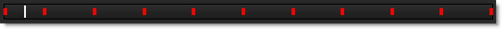

Timebar / Player Controls
The Timebar below the Viewer provides you with controls to play your clips as well as navigate your session.
When MultiFrame is enabled, additional controls appear in the Timebar.
Timebar
Keyframe Markers
Colored markers in the Timebar shuttle area signify where selected objects have keyframes. Objects that display keyframes in the Timebar are shapes, trackers and painted frames. Path keyframes are shown for shapes, position keyframes for trackers and painted frames when in the Paint node.
The color of the markers is determined by the object color. If multiple selected objects have a keyframe on the same frame, the most recently selected object's color has precedence. A white marker is used to signify the current frame and hovering over a marker displays a tool tip showing the keyframe time.
Shift-Alt-clicking and dragging a marker will move the keyframe in time.
Note: In the Paint node, selecting a paint tool ignores the object selection and displays paint keyframe markers instead. To see the keyframe markers of selected objects, select a non-paint tool like Reshape, Transform or Tracker.
Prevent Field Dragging
Prevents drag adjustments in the Timebar’s numeric fields.
First Frame
The numeric entry box on the left displays the first frame to be viewed. Enter a new number in the numeric entry box to change the start frame and hit Enter. Frame numbers located before the start frame, including negative numbers, can be entered. This is useful when adjusting motion blur at the start of a shot.
Last Frame
The numeric entry box to the right of the shuttle slider displays the last frame to be viewed. Enter a new number in the numeric entry box to change the last frame and hit Enter. Frame numbers located beyond the end frame can be entered. This is useful when adjusting motion blur at the end of a shot.
Current Frame
The second numeric entry box to the right of the shuttle slider displays the currently viewed frame. Enter a new number in the numeric entry box and hit Enter to move directly to that frame.
Increment
The far right numeric entry box controls the amount of frames that the Viewer increments from frame to frame.
Fields
When selected, the Fields button changes the Timebar and Timeline to advance and display in half frame increments.
MultiFrame
When MultiFrame is enabled, additional controls appear in the Timebar.
Start
Sets the start of the MultiFrame range.
Fade In / Fade Out
Controls the strength of the MultiFrame adjustment. For instance, if the object is slowly drifting, the strength of the adjustment can be faded in or out.
Fade In
Sets the first frame where the MultiFrame adjustment is 100%.
Fade Out
Sets the last frame where the MultiFrame adjustment is 100%.
End
Sets the end of the MultiFrame range.
Play Menu
Changes the playback mode. The Play menu is located at the bottom-left of the Viewer.
Once
Plays the clip once when you press the Play button.
Loop
Plays the clip in a continuous loop when you press the Play button.
Bounce
Plays the clip continuously, alternately forwards, then backwards when you press the Play button.
Playback Controls
These controls affect playback.
Shuttle
Clicking and dragging in the shuttle area shuttles through the clip.
Previous Key
Moves to the previous keyframe.
Next Key
Moves to the next keyframe.
Home
Moves to the first frame.
Previous Frame
Step backward 1 frame.
Play Backward
Plays backward.
Stop
Stops playback.
Play
Plays forward.
Next Frame
Step forward 1 frame.
End
Moves to the last frame.
Playback Controls Keyboard Shortcuts
Shortcut | Action |
|---|---|
Z | Step backward 1 frame |
Shift-Z | Moves to the previous keyframe |
Alt-Z | Jumps to the midpoint of the current frame and the previous shape keyframe |
X | Step forward 1 frame |
Shift-X | Moves to the next keyframe |
Alt-X | Jumps to the midpoint of the current frame and the next shape keyframe |
J | Plays backward |
K | Stops or starts playback |
L | Plays forward |
Space Bar | Stops playback |
Home | Moves to the first frame |
End | Moves to the last frame |
Click and drag in the shuttle area | Shuttles through the clip |
Shift-Alt-click and drag a keyframe marker | Moves the keyframe in time |
Frame Rate
Sets the frame rate for the clip in the Viewer. Enter the desired frame rate, for instance: 24 fps, 25 fps (PAL), 29.97 fps (NTSC DF) or 30 fps (NTSC NDF).
Duration
Displays the duration of the clip in the Viewer.
Real-Time Playback
RAM Cache
Silhouette can cache frames into RAM to guarantee real-time playback. When you hit the play button, each frame is cached into RAM. Once the clip is played through once, it will then play in real-time if enough RAM is available. At the bottom right corner of the interface, there is a numeric readout (Cache Display). It displays the number of frames loaded into RAM, the maximum frames that can be cached, the percentage of RAM currently being used as well as the session’s bit depth.
If your clip is longer than the maximum frames that can be cached into RAM, the clip will not play in real-time.
Hovering over the Cache Display will reveal a tool tip that shows the maximum cache size and total available physical memory in megabytes.
Preload Frames
Source frames are automatically cached in a background thread. The amount of preloaded frames is controlled by a Cache > Preload Frames preference with the default value being 10 frames.
Go to the Playback and Caching tutorial to see how you can playback the maximum amount of frames.
Purge RAM Cache
The RAM cache can be purged by right-clicking on the Cache Display and selecting the Purge RAM Cache option or by selecting Session > Cache > Purge RAM Cache. If selected, currently cached frames are cleared from RAM.